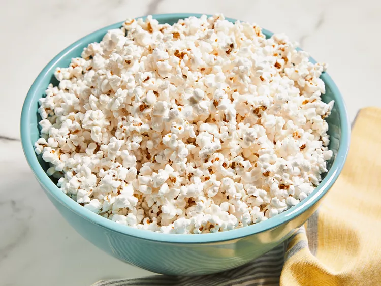

Microwave popcorn

Description
Believe it or not, you can make your own delicious,
low-fat microwave popcorn using standard popping corn and a brown paper lunch bag.
It works perfectly.
Skip the store-bought stuff and make this incredibly simple microwave popcorn from-scratch.
Ingredients
- Unppoped popcorn
- Oil
- Salt
Steps
- Gather all ingredients.
- Mix together unpopped popcorn and oil in a cup or small bowl.
- Pour the coated corn into a brown paper lunch sack,
and sprinkle in the salt. Fold the top of the bag over twice to seal in the ingredients.
- Cook in the microwave at full power for 2 1/2 to 3 minutes,
or until you hear pauses of about 2 seconds between pops.
Carefully open the bag to avoid steam, and pour into a serving bowl.
- Enjoy!